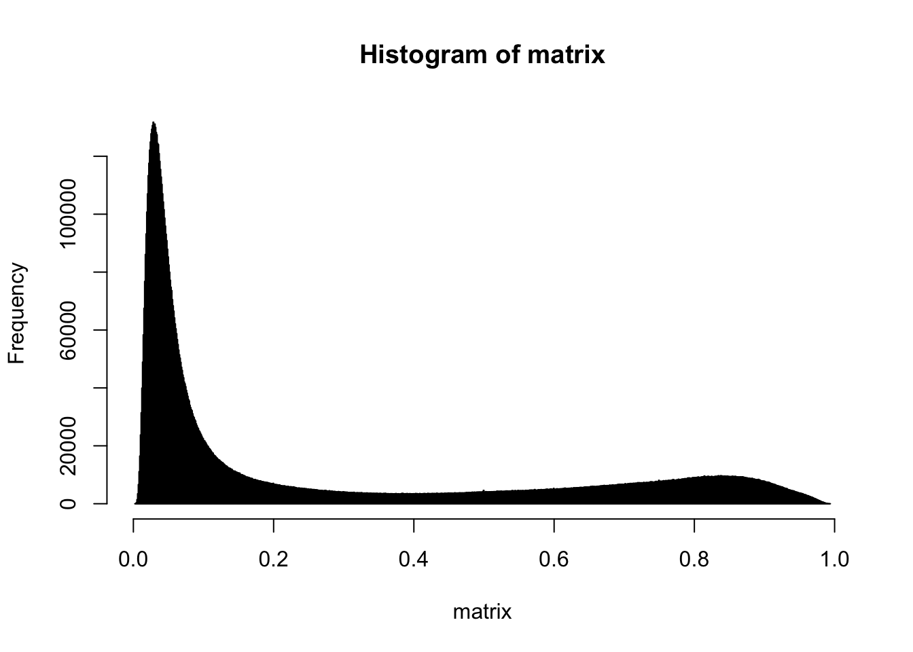
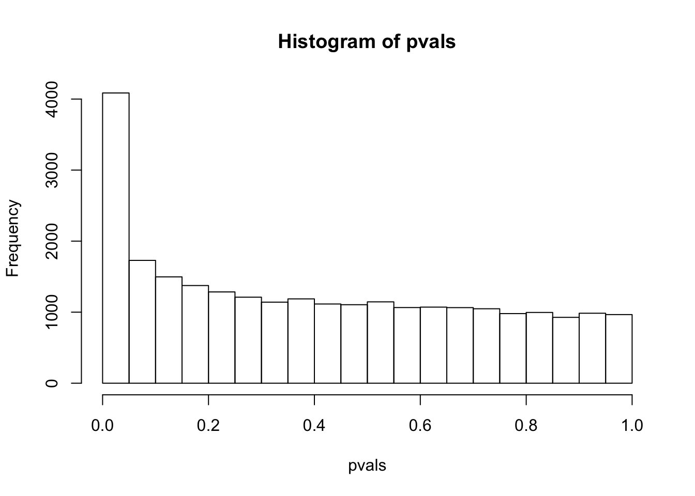

Automatically download the data from GEO
Obtain the matrix of beta values where each row corresponds to probes and each column corresponds to samples
matrix <- exprs(gse50409[[1]])
head(rownames(matrix))## [1] "cg00000292" "cg00002426" "cg00003994" "cg00005847" "cg00006414"
## [6] "cg00007981"head(colnames(matrix))## [1] "GSM1218373" "GSM1218374" "GSM1218375" "GSM1218376" "GSM1218377"
## [6] "GSM1218378"Number of probes:
probes <- rownames(matrix)
length(probes)## [1] 27578Number of samples:
samplesNames <- colnames(matrix)
length(samplesNames)## [1] 428hist(matrix, breaks=1000)
These are the probe names:
head(rownames(matrix))## [1] "cg00000292" "cg00002426" "cg00003994" "cg00005847" "cg00006414"
## [6] "cg00007981"annotation <- getGEO("GPL13534", destdir = "./")## Using locally cached version of GPL13534 found here:
## .//GPL13534.softannotation <- Table(annotation)
# setDT(annotation)
# Now match the rows in annotation that are present in our data
commonProbes <- intersect(annotation$ID, rownames(matrix))
cat("Number of probes for which hg19 annotation is available: ", length(commonProbes), "\n")## Number of probes for which hg19 annotation is available: 25978i <- match(commonProbes, annotation$ID)
annotation <- annotation[i, ]
i <- match(commonProbes, rownames(matrix))
matrix <- matrix[i,]
stopifnot(all(rownames(matrix) == annotation$ID))
head(annotation)## ID Name AddressA_ID
## 97 cg03515901 cg03515901 37604301
## 199 cg08455548 cg08455548 21731485
## 359 cg20401549 cg20401549 66684405
## 433 cg00029931 cg00029931 45616329
## 436 cg00032666 cg00032666 49773333
## 445 cg00060882 cg00060882 11804497
## AlleleA_ProbeSeq AddressB_ID
## 97 AACCAACTCRACTATTAACAACTCTATTAACAAAACTATTTATCTTTCTC NA
## 199 TTATATACACAAAATTTTACTCAAAAAAACTAACAACCCRAAAACRACRC NA
## 359 CAAACRCCAATTTCACTTTCTATTTTTAAACTTCACTTTTACTAAACCAC NA
## 433 TCAACRTTTCRTCACTTTATCTCTTTTAATAAACTCTACTACRTAATAAC NA
## 436 AAAAAATTTTCCTAAATCTCACTACATATCACACAAAAACAAATCCAAAC NA
## 445 ACCTAATAAATATTTATACAAACAATACTAAAAACAACCACCAAACCCCC NA
## AlleleB_ProbeSeq Infinium_Design_Type Next_Base Color_Channel
## 97 II
## 199 II
## 359 II
## 433 II
## 436 II
## 445 II
## Forward_Sequence
## 97 GTCACTGAGATAACCAGCTCGGCTGTTAGCAACTCTGTTAGCAAAGCTGTTTGTCTTTCT[CG]GAAACAACAGGTGAGAATTCCCCTTACAGACCTGCCCATGCTTTCTAAAGTGGCTCTCCC
## 199 CGAGGAGAACATTGTATGCACAGGGTTTTGCTCAGGAAAGCTAGCAGCCCGAAAGCGGCG[CG]TTTTCTTCAGCAGCGGGTCCCGCACGCGAGAGTGCTGCCAGCACGCTTTCTGCCTCCTTC
## 359 CCTCTCCTCACCAAACGCCAATTTCACTTTCTATTTTTGAGCTTCACTTTTGCTGAGCCA[CG]CCCTCCCTGTCCCCGGGCCACCCAGCCTCCCCATCTTCCGGGTTTGGGTGCAGCAACGCG
## 433 GCTTCCCTCGGGGACGGGGAGGCCAGAGGATCTGGGAAAAACACTGCTCCCTTCACTGAA[CG]CCACTACGTAGCAGAGTCCACCAAAAGAGATAAAGTGACGAAACGTTGAAAGCTGCGGGG
## 436 TCAGAGAACAGAGGAAGTTTTCCTGAATCTCACTGCATATCACACAAAAGCAAATCCAGA[CG]TAGGACCCAGATATCATACTTGTAGGCCCAGTGTTATTTTAGTCACATGAAGCTGCTCCT
## 445 TCTCTCCCAGGCCAGCGCGCGCGCCGGGTTGCATCACCCGCCTCGCACGGGCCGGCGGGG[CG]GGGGTTTGGTGGCTGCCCTCAGTATTGCCTGCACAAATATCTACCAGGTCTGCGACGAAT
## Genome_Build CHR MAPINFO
## 97 37 Y 3447157
## 199 37 Y 4867968
## 359 37 Y 7141681
## 433 37 X 100645741
## 436 37 X 149613398
## 445 37 X 24072811
## SourceSeq Chromosome_36
## 97 ACCAGCTCGGCTGTTAGCAACTCTGTTAGCAAAGCTGTTTGTCTTTCTCG Y
## 199 CGCGCCGCTTTCGGGCTGCTAGCTTTCCTGAGCAAAACCCTGTGCATACA Y
## 359 AAACGCCAATTTCACTTTCTATTTTTGAGCTTCACTTTTGCTGAGCCACG Y
## 433 CGCCACTACGTAGCAGAGTCCACCAAAAGAGATAAAGTGACGAAACGTTG X
## 436 CGTCTGGATTTGCTTTTGTGTGATATGCAGTGAGATTCAGGAAAACTTCC X
## 445 CCTGGTAGATATTTGTGCAGGCAATACTGAGGGCAGCCACCAAACCCCCG X
## Coordinate_36 Strand Probe_SNPs Probe_SNPs_10 Random_Loci
## 97 3507157 R NA
## 199 4927968 R NA
## 359 7201681 R NA
## 433 100532397 F NA
## 436 149364056 R NA
## 445 23982732 F NA
## Methyl27_Loci UCSC_RefGene_Name UCSC_RefGene_Accession
## 97 TRUE TGIF2LY;TGIF2LY NM_139214;NM_139214
## 199 TRUE PCDH11Y NM_032971
## 359 TRUE PRKY NR_028062
## 433 TRUE RPL36A NM_021029
## 436 TRUE MAMLD1 NM_005491
## 445 TRUE EIF2S3 NM_001415
## UCSC_RefGene_Group UCSC_CpG_Islands_Name
## 97 5'UTR;1stExon
## 199 TSS1500 chrY:4867956-4868586
## 359 TSS1500 chrY:7141521-7143224
## 433 TSS1500 chrX:100645780-100646107
## 436 TSS1500
## 445 TSS1500 chrX:24072558-24073135
## Relation_to_UCSC_CpG_Island Phantom DMR Enhancer HMM_Island
## 97 NA
## 199 Island NA Y:4927957-4928608
## 359 Island NA Y:7201522-7203224
## 433 N_Shore NA
## 436 NA
## 445 Island NA X:23982644-23983279
## Regulatory_Feature_Name Regulatory_Feature_Group DHS RANGE_START
## 97 NA 3447157
## 199 NA 4867968
## 359 NA 7141681
## 433 X:100645391-100646487 Promoter_Associated NA 100645741
## 436 NA 149613398
## 445 X:24071907-24073667 Promoter_Associated NA 24072811
## RANGE_END RANGE_GB SPOT_ID
## 97 3447280 NC_000024.9
## 199 4868091 NC_000024.9
## 359 7141804 NC_000024.9
## 433 100645864 NC_000023.10
## 436 149613521 NC_000023.10
## 445 24072934 NC_000023.10disease <- pData(phenoData(gse50409[[1]]))
disease[1:20,1]## [1] 4763072011_A: Bladder cancer case 4763072011_B: Control
## [3] 4763072011_C: Control 4763072011_D: Control
## [5] 4763072011_E: Control 4763072011_F: Bladder cancer case
## [7] 4763072011_G: Control 4763072011_H: Bladder cancer case
## [9] 4763072011_I: Control 4763072011_L: Bladder cancer case
## [11] 4763072021_A: Control 4763072021_B: Bladder cancer case
## [13] 4763072021_D: Control 4763072021_E: Control
## [15] 4763072021_F: Control 4763072021_G: Bladder cancer case
## [17] 4763072021_H: Control 4763072021_I: Bladder cancer case
## [19] 4763072021_J: Control 4763072021_K: Control
## 428 Levels: 4763072011_A: Bladder cancer case ... 4953087046_L: Bladder cancer casesick <- which(disease$source_name_ch1 == "Bladder cancer case")
control <- which(disease$source_name_ch1 != "Bladder cancer case")
t.test(matrix[1,control], matrix[1,sick])##
## Welch Two Sample t-test
##
## data: matrix[1, control] and matrix[1, sick]
## t = -2.3922, df = 424.64, p-value = 0.01718
## alternative hypothesis: true difference in means is not equal to 0
## 95 percent confidence interval:
## -0.033361664 -0.003266461
## sample estimates:
## mean of x mean of y
## 0.7869156 0.8052296pvals <- apply(matrix,1,function(x) {t.test(x[sick],x[control])$p.value})hist(pvals, breaks = 1000)
#The p-value graph should be distributed around zero. What we got appears to be the expected result, because in the graph it is clear that frequency of probes with p-value zero or very close to it is the highest, while the frequency of probes with bigger p-value plummets extremely.system.time(apply(matrix,1,function(x) {t.test(x[sick],x[control])$p.value}))## user system elapsed
## 4.943 0.150 5.123